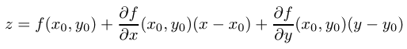

Piano tangente
Nel caso di funzioni ad una variabile l'esistenza della derivata garantisce la continuità della funzione e l'esistenza della retta tangente al suo grafico, anzi rappresenta proprio la definizione di retta tangente. Nel caso di funzioni a più variabili l'esistenza delle derivate parziali non garantisce la continuità, e non è una condizione sufficiente per l'esistenza del piano tangente. Vediamo alcuni esempi.
Esempio 1. Consideriamo la funzione

f non è continua in (0,0) anche se per ogni direzione v = ( cosθ, sinθ ), esiste la derivata direazionale:
Dato che f è nulla in (0,0) il piano tangente in tale punto dovrebbe essere z=0. Osservando il grafico di f, ci si rende conto che un simile piano non può essere considerato come "tangente"; inoltre la funzione non è neanche continua nell'orgine.
Affinchè esista il piano tangente la funzione deve essere differenziabile, ossia deve valere la seguente condizione

Per ricavare l'equazione del piano tangente al grafico della funzione nel punto  lasciamoci guidare dall'intuizione geometrica. Sezionando il grafico di z=f(x,y), con il piano verticale y=y0, troveremo una curva in questo stesso piano, descritta dall'equazione
lasciamoci guidare dall'intuizione geometrica. Sezionando il grafico di z=f(x,y), con il piano verticale y=y0, troveremo una curva in questo stesso piano, descritta dall'equazione  . La retta r1 tangente a tale curva in x0 si troverà anche sul piano tangente che cerchiamo. Se sezioniamo il grafico con un piano verticale x=x0, troveremo una seconda curva descritta dall'equazione z =f(x,y0) , con la retta r2 tangente in (x0, y 0, f(x0, y0)) e appartenente al piano tangente. Dato che due rette individuano un unico piano, questo nel caso in cui f sia differenziabile, sarà il piano tangente.
. La retta r1 tangente a tale curva in x0 si troverà anche sul piano tangente che cerchiamo. Se sezioniamo il grafico con un piano verticale x=x0, troveremo una seconda curva descritta dall'equazione z =f(x,y0) , con la retta r2 tangente in (x0, y 0, f(x0, y0)) e appartenente al piano tangente. Dato che due rette individuano un unico piano, questo nel caso in cui f sia differenziabile, sarà il piano tangente.

L'equazione della retta r1 nel piano y = y0, è data dall'equazione:
La stessa retta, considerata nello spazio (x,y,z) anziché nel piano y = y0 è individuata dal sistema:
In modo analogo la retta r2, nello spazio è individuata dal sistema:
Il piano contenente entrambe le rette è datto dall'equazione
z = f(x0) + ∇f(x0) ⋅ (x - x0)
o più esplicitamente
che definisce il piano tangente al grafico di f in P0 = (x0,y0, f(x0,y0)).